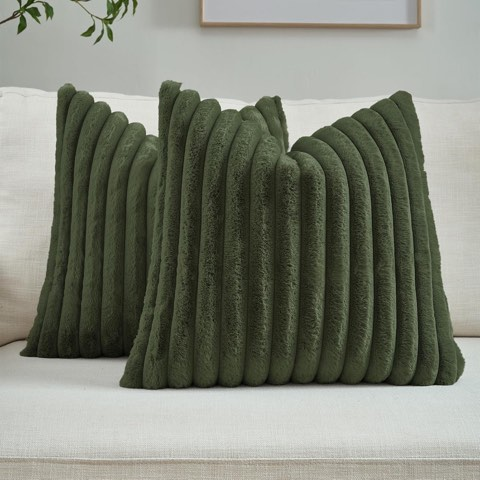

A good living room is not a place so much as an experience, it is where you collapse after a long day, where guests get handed the slightly wobbly chair, and where you tell yourself you are going to read before three episodes happen instead.
The best ones were never built around matching cushions or flawless styling.
They are built around comfort and personality, a space that genuinely feels like a hug the moment you walk in, whatever your style actually is.
None of the twelve ideas below require a renovation or a big budget.
Most are the kind of thing you can start this weekend with what is already sitting in a closet somewhere.

12 Ways to Make a Living Room Feel Genuinely Cozy
1. Frame the Room With Statement Curtains
Curtains do more for a room's mood than most people give them credit for, and they do not have to be the soft, breezy linen kind to make an impact.
Sweeping, floor-length drapery with real volume adds a theatrical, enveloping quality that feels genuinely romantic rather than stiff.
Whatever style gets chosen, length matters more than almost anything else, curtains that actually reach the floor instantly make a room feel finished and considerably more elegant than ones that stop short.

Handmade Curtain Tiebacks with Tassel, Rope Holdbacks
Shop on Amazon2. Make It Personal
The coziest living rooms are never the ones that look like they were copied straight from a catalog, they are the ones that actually tell you something about who lives there.
Framed family photos, travel souvenirs, handmade pieces, vintage finds, anything sentimental genuinely loved belongs here, catalog-perfect or not.
A dense gallery wall of vintage-framed photos above a simple sofa is proof that a room does not need matching anything to feel warm.
It just needs to feel like yours.

Camden Reed Mixed Gallery Wall Frame Set, 9 Piece
Shop on AmazonLineshading Vintage Picture Frames Set for Gallery Wall, Antique Gold, 8 Pcs
Shop on Amazon3. Build a Small Reading Nook
Whether books actually get finished in it, or it mostly just becomes the spot for scrolling a phone, a dedicated cozy corner is one of the most satisfying wins in a living room.
The formula is simple: a cushy armchair, a soft floor lamp for warm directional light, a side table for books or tea, and a throw blanket for curling up.
Tucking it near a bookshelf, if there is one, helps too.
The visual of books nearby does half the cozy work even on days nobody opens one.

4. Lean Into Warm, Earthy Colors
Spa-like, calming spaces never lean on neon brights, and that is not an accident.
Warm, earthy tones are doing quiet work in almost every genuinely cozy room anyone's ever actually liked.
Soft beige, warm taupe, creamy white, deep rust, olive green, terracotta, any of these grounds a room immediately in a way cooler, brighter colors just do not.
Sticking to muted, grounded shades throughout tends to work best.
These tones also happen to be forgiving for anyone with pets, kids, or a few questionable snack habits in the house.



FUTEI Faux Fur Throw Pillow Covers, 18 x 18 Inch, Olive Green, Pack of 2
Shop on Amazon5. Pile On Blankets and Throws
One throw blanket in a living room is genuinely never enough, they are the easiest, lowest-commitment way to add texture and warmth without touching anything else in the room.
Beyond making a sofa instantly more inviting, they are practically functional too, perfect for spontaneous naps, and an easy way to shift a room's color palette without buying new furniture.
Draping one over the arm of the sofa, with a couple more stashed in a basket nearby, keeps one always within reach.


6. Keep Lighting Soft and Layered
Lighting can make or break the whole cozy effort.
There is no point layering in soft textures and warm colors if it is all getting washed out under one harsh overhead light.
Floor lamps with fabric shades, table lamps with warm bulbs, string lights, and real or flameless candles all work toward the same soft, ambient glow.
Layering light sources works the same way layering textures does, multiple smaller, warmer sources beat a single bright fixture every single time.

7. Add Wooden Touches
Nothing warms up a room quite like natural wood, and going full log cabin was never required to get the effect.
A few thoughtful pieces do the job.
Floating shelves, a reclaimed wood coffee table, exposed beams where they exist, or simple wood-framed accents all add the same grounded warmth.
Wood and greenery are natural partners too, a chunky reclaimed coffee table and open wood shelving feel considerably warmer next to a simple vase of branches than they would against an all-metal setup.


8. Let the Fireplace Lead
A fireplace puts a living room most of the way to cozy without even trying.
Wood-burning, gas, or electric, it does not really matter.
Fire reads as comfort instantly.
A fireplace does something furniture alone cannot: it gives the room a genuine gathering point, the kind of focal point that makes cold nights feel like an occasion instead of something to get through.
Arranging seating to actually face it, rather than treating it as background, makes the biggest difference.
No fireplace in the room?
A cluster of pillar candles on a mantel gets a surprising amount of the same glow.

duraflame Electric Log Set Heater with Infrared Flames, 1,000 Sq Ft
Shop on AmazonEywamage Ivory Flickering Flameless Pillar Candles with Remote, Set of 3
Shop on Amazon9. Bring in Plants
Plants might be the cheapest, easiest cozy upgrade on this entire list, and they do something no other item here can, they genuinely bring the room to life.
A single statement plant is not a requirement.
Mixing a tall floor plant, a hanging trailing vine, and a few smaller shelf plants builds the same layered effect that works for textiles.
A fully jungle-level room might be more than most people want, but even a scaled-down version of this, one big leafy plant plus a couple of smaller pots, changes how a room feels almost immediately.

6 FT Artificial Fiddle Leaf Fig Tree with White Planter & Moss
Shop on Amazon10. Layer Your Textures
Ever walked into a room that felt comfortable before you even sat down?
That is almost always texture doing the work, not color or layout.
Mixing materials is the trick, chunky knit pillows, a soft wool rug, a fluffy throw draped just so, linen curtains, a velvet sofa against a rougher wood coffee table.
The contrast is what reads as cozy.
Variety matters more than matching here.
Smooth against rough, shiny against matte, soft against firm, the more textures in play, the deeper and warmer the room ends up feeling.

11. Go Bigger on the Sofa
A stiff, undersized sofa might look fine in photos, but it does nothing for actual comfort.
Deep-seated sofas and oversized sectionals are what genuinely cozy living rooms get built around.
The appeal is not complicated, you can actually sink into them, sprawl out for a movie marathon, and pile on more throw pillows than would ever fit on a smaller piece.
A wraparound sectional built right into the room around the fireplace turns the whole space into one big landing spot rather than a collection of separate seats.


12. Roll Out a Thick, Soft Rug
If only one thing on this list gets done, make it this one.
A thick area rug is the fastest, most reliable way to cozy up a living room, full stop.
Beyond the obvious comfort factor, a rug does real work, it defines the seating area, softens footsteps and echo, and makes the whole room feel more pulled-together instantly.
Going bigger than feels natural pays off here.
A rug that is too small makes a room look choppy and unfinished, while a properly oversized one instantly reads as intentional.
If budget is the limiting factor, this is the one place worth spending more than feels comfortable.
Everything else on this list layers on top of the rug, so getting it right first makes every later choice easier.

Final Thoughts
A comfortable living room was never about looking expensive, it just needs to feel like you.
Whether that means layering in soft rugs, finally buying the oversized sofa that is been on your mind, or building a tiny reading corner you will actually use, the goal stays the same: a room you genuinely want to be in.
Let it be the place where you flop, chill, laugh, and occasionally finish that book.
Pick one idea from this list and start there.
Cozy builds up a layer at a time, not all at once.
Give whatever you try a few weeks before adding the next layer.
A room that grows slowly tends to feel more lived-in than one that was finished in a single weekend sprint.